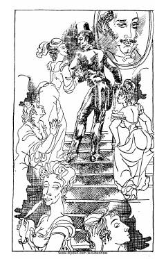

AGi de Mopassanning mashhur romani o'zbek tilida.
Ushbu asar fransuz yozuvchisi Gi de Mopassanning mashhur romanlaridan biri bo'lib, uning o'zbek tilidagi tarjimasidir. Kitobda bosh qahramon Jorj Dyuuaning hayoti, uning jamiyatdagi mavqei va taqdiri tasvirlangan. Asar inson tabiatining murakkab qirralarini ochib beradi.